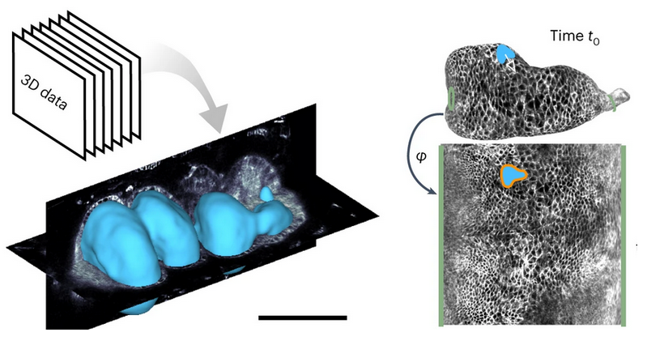
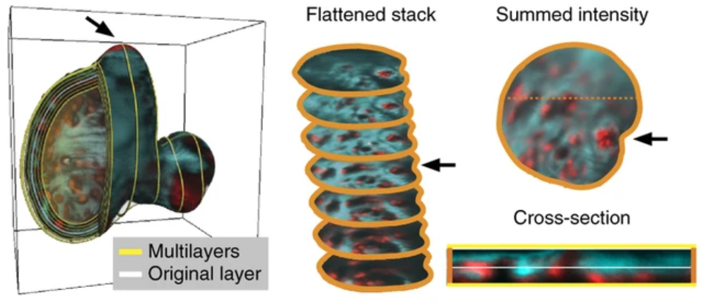

Tissue cartography with blender_tisssue_cartography
Tissue cartography (TC) is a tool for analyzing 3d biological image data by taking advantage of the laminar, sheet-like organization of many biological tissues. Tissue cartography extracts a surface of interest (SOI) from the volumetric image data, for example, the tube-like structure of the developing fly gut, and cartographically projects it into a 2d plane (see figure below, from Mitchell & Cislo 2023). This is extremely helpful for both data visualization and data analysis, for example cell tracking.

Tissue cartography was proposed by Heemskerk & Streichan 2015 (ImSAnE software package). See also Mitchell & Cislo 2023 (TubULAR software package) and Herbert et al. 2021 (LocalZProjector software package).
However, these existing tools for tissue cartography are either limited in the type of geometries they can handle, or difficult for non-experts to use and build upon. blender_tisssue_cartography is a set of Python tools, template analysis pipelines, and tutorials to do tissue cartography using the popular 3D creation software Blender. blender_tisssue_cartography makes tissue cartography user-friendly via simple, modular Python code, Blender’s graphical user interface, and powerful algorithms from the computer graphics community.
You can use blender_tissue_cartography in two forms:
The
blender_tissue_cartographypython libraryThe
blender_tissue_cartographyblender add-on
For sophisticated use cases (dynamic datasets, custom computer vision operation), or automated pipeline, use the python library. Most users though can start with the blender add-on, which allows you to carry out almost all steps of the tissue cartography pipeline within blender’s graphical user interface.
blender_tisssue_cartography also features a general-purpose pipeline for dynamic surfaces from timelapse microscopy in which the user graphically defines a cartographic projection for a single key frame, which is propagated to all other frames via robust surface-to-surface registration algorithms (tutorial 9, “Time-lapse imaging and dynamic surfaces”). A differential geometry module allows to analyze tissue flows and surface geometry dynamics (tutorial 10, “3D analysis and differential geometry”).
Tissue cartography workflow
The TC workflow begins with a volumetric recording, for example, a \(z\)-stack recorded on a confocal microscope. Let’s consider first the case of a single recording with a single time point. TC comprises the following steps:
Segmentation: volumetric image \(\mapsto\) 3d segmentation. From the volumetric image - a
.tiffile , the user creates a 3d segmentation, also a.tiffile with values from 0-1. This segmentation divides the image into “inside” and “outside”, and the SOI is defined as the boundary.- Note: not all surfaces can be represented as the boundary of a volume. One can also directly segment out the SOI (and use a different algorithm below in step 2).
Meshing: 3d segmentation \(\mapsto\) surface mesh. A polygonal mesh of the segmentation boundary is computed, representing the surface of interest.
UV mapping: Polygonal mesh \(\mapsto\) cartographic plane. A map from the mesh to a cartographic plane is generated (parametrized by coordinates \(u, v\), to distinguish from the \(x,y,z\) 3d coordinates).
Projection: volumetric image + polygonal mesh + UV map \(\mapsto\) projected image. The volumetric image data is interpolated onto the UV cartographic plane using the 3d positions from the triangular mesh, creating a 2d projection of the 3d image data (“pullback”).
- Multi layers: to capture the whole thickness of a tissue sheet, one typically creates multiple projections using a version of the triangular mesh that is shifted along the local normal direction “inwards” and “outwards” (figure from Heemskerk & Streichan 2015):

Analysis and visualization: with the projected data in hand, we can visualize it in 3D, or analyse it in 2D (e.g. segment cells), computationally correcting for the distortion of the projection.
Batch processing: batch process multiple 3D images, for example frames of a movie.
These steps will be explained in detail as you go through the following tutorials.
Design principles of blender_tisssue_cartography
- Blender for graphical, interactive workflows - blender is a widely used, open-source program for 3D creation and contains advanced tools for mesh editing, UV mapping, and 3D visualization within a well-documented GUI. All of the main functionalities are available from within a Blender add-on - no programming knowledge necessary.
- File-based encapsulation - each step in the pipeline terminates in a single data file (e.g. a
.objmesh, a.tif3d segmentation), with all subsequent steps only depending on that data file. This means you can easily switch out the tools used for each step. - Python library + template Jupyter notebooks. For sophisticated users, the
blender_tissue_cartographypython library allows creating custom and automatized pipelines. Template / tutorial jupyter notebooks are provided as starting points. - UV transfer for dynamic data For dynamic data (i.e. movies), we provide general-purpose algorithms that transfer the user-defined UV map from one frame to all other frames. This allows non-experts to create consistent cartographic projections across time series.
Software stack
- Python libraries:
- Ilastik Image classification and segmentation,
- Blender Mesh editing and UV mapping.
Optional
Meshlab GUI and Python library with advanced surface reconstruction tools (required for some workflows). Not available for new Macs with ARM CPUs.
Python libraries:
Blender plugins:
- MicroscopyNodes for rendering volumetric
.tiffiles in blender
- MicroscopyNodes for rendering volumetric
Workflow details
We briefly outline the tools and algorithms available for each step in the tissue cartography pipeline. They are implemented in both the blender_tissue_cartography library, as well as the Blender add-on. This section explains the required input and output data at each step in case you want to swap out the provided tools for something else.
1. Segmentation
To create a segmentation, one first downsamples the data to reduce computational overhead. Next, we can use any of the following tools to create a 3d segmentation:
- Ilastik - Tutorial 1.
- Morphsnakes - Tutorial 7
- Custom Python code
For the segmentation, there are two options:
- Segment out the object of which your SOI is the boundary (i.e. 1’s in the segmentation correspond to pixels that lie inside the volume of which your surface is the boundary). This assumes that our SOI is a closed/watertight surface (including the case where the SOI ends at the 3d image boundary).
- Directly segment your SOI (i.e. 1’s in the segmentation correspond to pixels that lie on the surface). See the alternative workflow below. (Generally, option 1 is easier).
Output: 3d segmentation as .tif file
2. Meshing
When the surface is defined as by a volume segmentation (i.e. as a so-called “level set”), robust algorithms exist to compute the corresponding mesh, namely marching cubes and many other.
- Marching cubes is shipped with
blender_tissue_cartography. - MeshLab GUI and python library, contains marching cubes and many other tools for surface reconstruction
Alternate workflow: segmentation and meshing for open surfaces
If we have an open surface that is not the boundary of some solid volume, or for some other reason we want to directly segment the surface, we need to use a different algorithm. From our surface segmentation, we extract a cloud of points on the surface. From the point cloud, one can create a triangular mesh using a variety of algorithms, notably Poisson surface reconstruction, as implemented by MeshLab. See tutorial 7.
Output: surface mesh as .obj file
3. UV mapping and mesh processing
To create the map from the mesh to the cartographic \(uv\) plane, we use be blender and its UV mapping functionality. If the mesh looks very poor, we can step back and improve the segmentation and/or meshing. We can also edit the mesh here to correct segmentation/mesh generation errors.
UV mapping conventions
We adopt the UV mapping conventions of the graphics community. \(u,v\) always range from 0-1 (with periodic boundary conditions). In general, blender will always map the entire mesh into the \(u,v\) plane.
Output: surface mesh with normals and texture coordinates as .obj file
4. Projection
Using scipy, we interpolate the volumetric image data onto the \(uv\) plane. Using the vertex normals, we create a multilayer projection.
Output: two .tif \(z\)-stacks (interpolated data and 3d coordinates) and interpolated data as a series of .png images to use as blender textures
5. Visualization and analysis
We can now load the projected data into blender as textures and see whether we are content with the result. If not, we iterate by editing the mesh and/or the \(uv\) mapping. Otherwise, we are done - we can proceed to the analysis of the projected images or use blender to create publication-quality 3d renders.
6. Multiple recordings and movies
If we have multiple recordings of very similar structures or dynamic data, i.e. movies with multiple frames, we need to extract a surface mesh for each timepoint as above. However, we construct a UV map only once, for a suitably chosen keyframe or reference mesh. We then transfer that UV map to all other frames/recordings using surface t0 surface registration algorithms